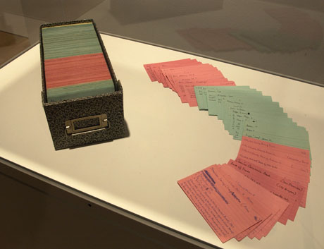
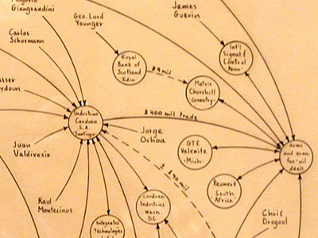
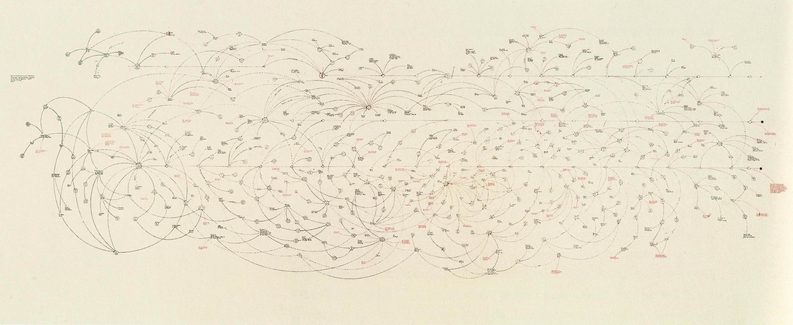
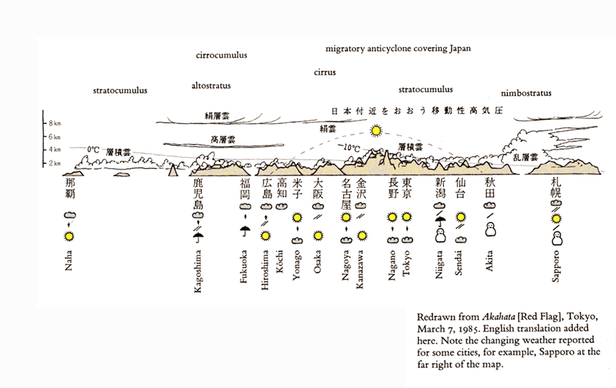
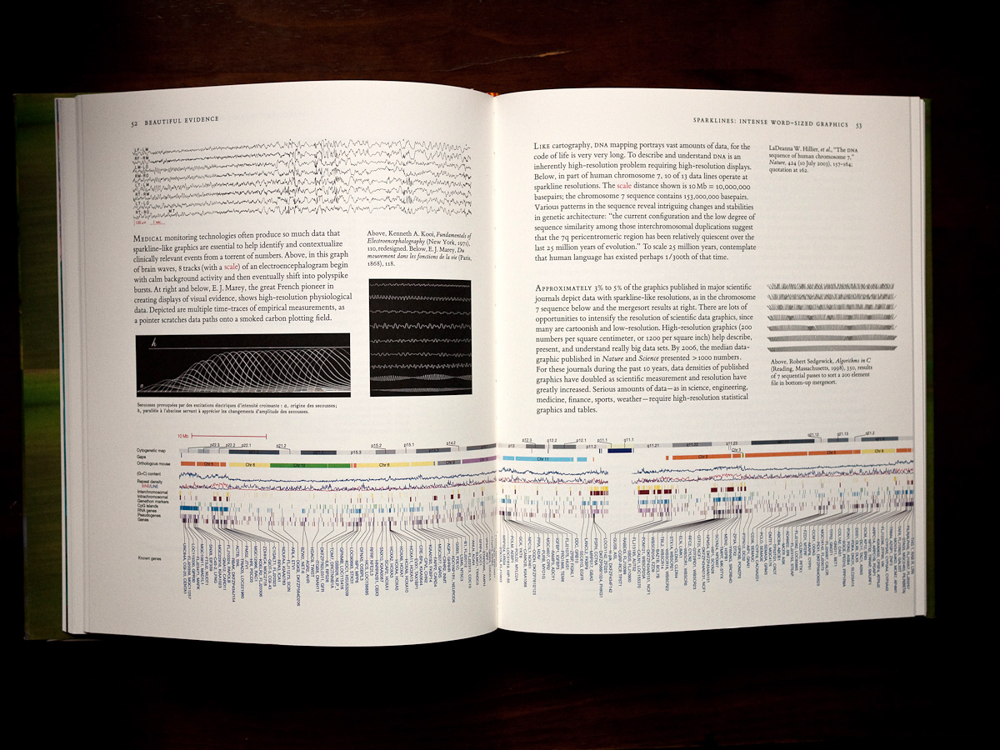
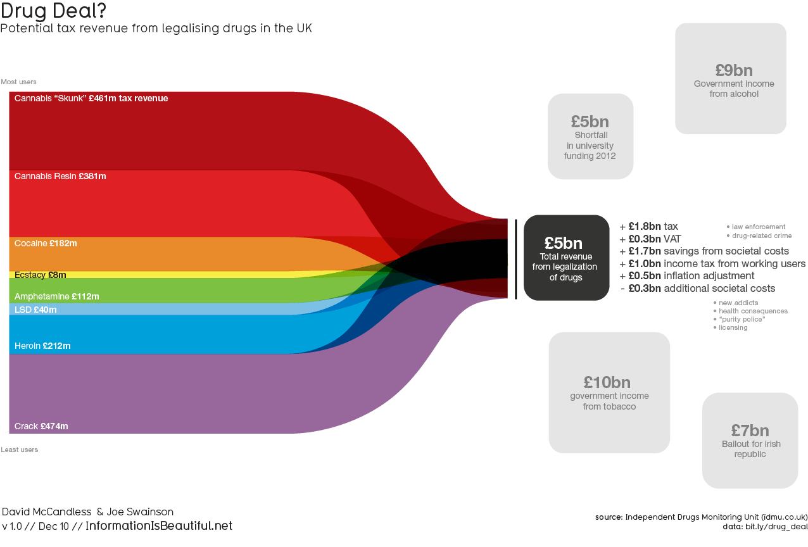

class: centre, top, inverse uom-image: css/L_shape_col_white_background.png iam-image: css/iam-inverse.png .uomi[<img class="banner" src="{{uom-image}}" width="100%">] .iami[<img class="banner" src="{{iam-image}}" width="100%">] [](http://dx.doi.org/10.5281/zenodo.17646) # [HCI in a World of DataScience](http://dx.doi.org/10.5281/zenodo.17646) ### <a id="presentedby">Simon Harper</a> ### CNR - HIIS Laboratory May 2015 .asidenb[ - **Slides**: http://goo.gl/0f1FGX - **Citations**: http://sharpic.github.io/hci-ds/data-storytelling.bib ] --- name: uomtemplate uom-image: css/L_shape_col_white_background.png iam-image: css/iam.png title: HCI in a World of DataScience presenter: [@sharpic](http://twitter.com/sharpic) doi: this: [http://dx.doi.org/10.5281/zenodo.17646](http://dx.doi.org/10.5281/zenodo.17646) presentation: Slides DOI bib: http://sharpic.github.io/hci-ds/data-storytelling.bib data: no-data code: no-code venue: CNR - HIIS Laboratory - May 2015 layout: true class: left, top .uomi[<img class="banner" src="{{uom-image}}" width="100%">] .iami[<img class="banner" src="{{iam-image}}" width="100%">] .footer[{{presenter}} | [{{title}}]({{doi}}) {{this}} | {{venue}}] ## {{focus}} --- template: uomtemplate section: A New Field (1/5) focus: Data Science class: left, middle .sections[{{section}}] <blockquote> Data Science is the extraction of knowledge from data </blockquote> .aside[[Thanks to wikipedia - https://en.wikipedia.org/wiki/Data_science - Accessed 04 May 2015](https://en.wikipedia.org/wiki/Data_science)] -- .alert[At no point on the wikipedia page is HCI mentioned.] --- template: uomtemplate section: A New Field (1/5) focus: HCI? .sections[{{section}}] <blockquote> In a world of data science, big data, and broad data - and over multiple disciplines - does HCI play a part; and if so why and how? </blockquote> -- ### Why... is it important? ### How... should this manifest? -- .aside[ ### As we're at the [Human Interfaces in Information Systems (HIIS) Laboratory](http://hiis.isti.cnr.it/) I hope you'll help me! ] --- template: uomtemplate section: A New Field (1/5) focus: Is HCI Needed? .sections[{{section}}] ### Human Computer Interaction is Critical for DataScience (says NIST<sup>1</sup>, DARPA<sup>2</sup>, NSF<sup>3</sup>...) - For tools, - for understanding data, - to help computation, - reduce dimensionality, - identify features, - resolves clusters from unsupervised learning, and - evaluation and reducing overfitting. .aside[ 1. [NIST Human Computer Interaction and Data Science Focus Group (.pdf)](http://www.nist.gov/itl/iad/upload/HCI-and-Data-Science-Report.pdf) 2. [DARPA - XDATA Project](http://www.darpa.mil/NewsEvents/Releases/2012/03/29.aspx) 3. [NSF - Initial Data Science Pilot is HCI based](http://www.hpcwire.com/2014/10/01/nsf-promotes-data-science-31m-award/) ] --- template: uomtemplate section: Rationale (2/5) focus: Unobtrusive Research .sections[{{section}}] ### My timeline starts in 1968... <blockquote> ...with Unobtrusive Measures; nonreactive research in the social sciences </blockquote> .aside[ - Original: Webb, E. J.: Unobtrusive measures; nonreactive research in the social sciences. Rand McNally sociology series. Rand McNally, Chicago, 1966. - Updated: Webb, E.: Unobtrusive measures. Sage Publications, Thousand Oaks, Calif, 2000.] --- template: uomtemplate section: Rationale (2/5) focus: How? class: left, middle .sections[{{section}}] - **Instrument** - longitudinal in situ (HCIs 'raison d'être' is now longitudinal wild ecologically valid studies); - **Analysis** - adds richness to other analysis forget cross-group low dimensionality - now single person multi dimensionality; - **Models** - we know **how** because this is what we do everyday; and - **Prototype** - moves development to just before scalability - as we need to redeploy! --- template: uomtemplate section: Rationale (2/5) focus: For Whom class: left, middle .sections[{{section}}] ### Public needs to have confidence <blockquote> Instrumenting the interface is Dead without Public Confidence - security, privacy, acceptance </blockquote> --- template: uomtemplate section: Visual Stories (3/5) focus: Data StoryTelling .sections[{{section}}] .center[.fig[ .caption[A sample of Lombardi’s colour-coded index cards with hand-written notes on them, out of the total 14,500. Fallon, R. (2005). Museum mission impossible. http://www.theartblog.org/2005/01/museum-mission-impossible/. .credit[Mark Lombardi: Global Networks, installation view, Art Gallery of Ontario, Toronto, 2004.]]]] --- template: uomtemplate section: Visual Stories (3/5) focus: Mark Lombardi - Detail .sections[{{section}}] .center[.fig[ .caption[Mark Lombardi: Global Networks - Exhibitions - Independent Curators International . http://curatorsintl.org/exhibitions/mark-lombardi-global-networks, Accessed - 2015. .credit[Lima, M.: visualcomplexity.com — Mark Lombardi’s Narrative Structure . http://www.visualcomplexity.com/vc/project.cfm?id=23, Accessed - 2015.]]]] --- template: uomtemplate section: Visual Stories (3/5) focus: Mark Lombardi - Full .sections[{{section}}] .center[.fig[ .caption[Lombardi, Mark (1996-2000) BCCI, ICIC and FAB, 1972-91 - See more at: http://www.alt-aesthetics.com/mark-lombardi-drawing-global-social-networks#sthash.sEjKFvXh.dpuf .credit[ 7 Mark Lombardi: Drawing Global Social Networks. http://www.alt-aesthetics.com/mark-lombardi- drawing-global-social-networks, 2013.]]]] --- template: uomtemplate section: Visual Stories (3/5) focus: Envisioning information .sections[{{section}}] .center[.fig[ .caption[Tufte, E.: Envisioning information. Graphics Press, Cheshire, Conn, 1995.]]] --- template: uomtemplate section: Visual Stories (3/5) focus: Evolves into Beautiful Evidence .sections[{{section}}] .center[.fig[ .caption[ Tufte, E.: Beautiful evidence. Graphics Press, Cheshire, Conn, 2006. .credit[Crag Mood: Books in the age of iPad. http://laboratorioextendido.dropmark.com/151081/2565419.]]]] --- template: uomtemplate section: Visual Stories (3/5) focus: Visual Communications - helps Experts and Public .sections[{{section}}] .center[.fig[ .caption[ McCandless, David: Information is beautiful. William Collins, London, 2012. **and** McCandless, D.: Knowledge is beautiful. William Collins, London, 2014.]]] --- template: uomtemplate section: Data Needs a Narrative (4/5) focus: Move to Interaction .sections[{{section}}] .center[.av[<iframe width="100%" height="415" src="http://atlas.media.mit.edu/en/explore/embed/tree_map/hs/export/ita/all/show/2012/?controls=false" frameborder="0" ></iframe> .caption[Hidalgo, C. Big data visualization engines for understanding the development of countries, social networks, culture and cities. In Proceedings of the 25th ACM Conference on Hypertext and Social Media (New York, NY, USA, 2014), HT ’14, ACM.]]] --- template: uomtemplate section: Data Needs a Narrative (4/5) focus: Data needs a Narrative to be Impactful class: left, middle .sections[{{section}}] - How to go about the narrative? - visualisation is **cool** in 2015; - big hype for visual analytics / info graphics - but visualisation needs interpretation; - we need to tell stories which fit the intended recipients; - public have problems with much of this; --- template: uomtemplate section: Data Needs a Narrative (4/5) focus: Data needs a Narrative to be Impactful #2 .sections[{{section}}] - narrative might be better in certain circumstances; - Nash in 2005 and before in other domains such as ecology; so, - think the simplicity of the press! .aside[ - Nash, C.: Narrative in culture: The uses of storytelling in the sciences, philosophy and literature. Routledge, 2005. - Nash Cunningham, K.: Data Visualization website. 2014. ] --- template: uomtemplate section: Wrapping Up (5/5) focus: Where to now? .sections[{{section}}] ### Current Wisdom is: - to ignore HCI - is these apt? - to leave presentation to the device - is that best? - to use visuals - aren't these becoming too complex? - to design for the data - is this appropriate? .aside[ - Crag Mood: Books in the age of iPad. http://laboratorioextendido.dropmark.com/151081/2565419. ] --- layout: true class: centre, top, inverse uom-image: css/L_shape_col_white_background.png iam-image: css/iam-inverse.png .uomi[<img class="banner" src="{{uom-image}}" width="100%">] .iami[<img class="banner" src="{{iam-image}}" width="100%">] [](http://dx.doi.org/10.5281/zenodo.17646) # Thanks! # Questions? What Am I Missing? ## [HCI in a World of DataScience](http://dx.doi.org/10.5281/zenodo.17646) ### <a id="presentedby">Simon Harper</a> ### CNR - HIIS Laboratory May 2015 .aside[ - **Slides**: http://goo.gl/0f1FGX - **Citations**: http://sharpic.github.io/hci-ds/data-storytelling.bib ] ---